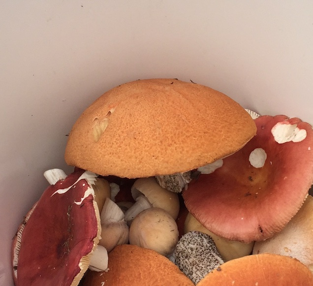
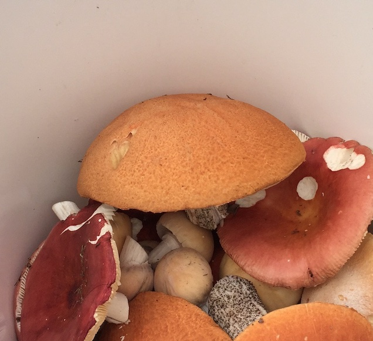
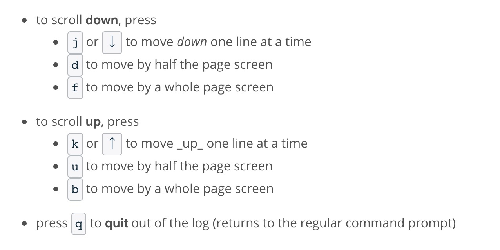
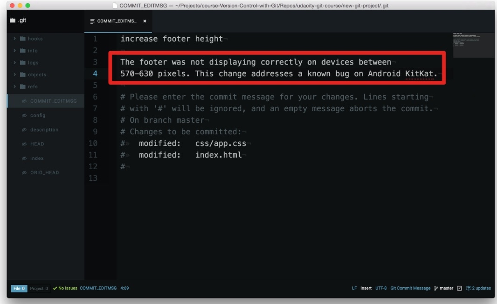
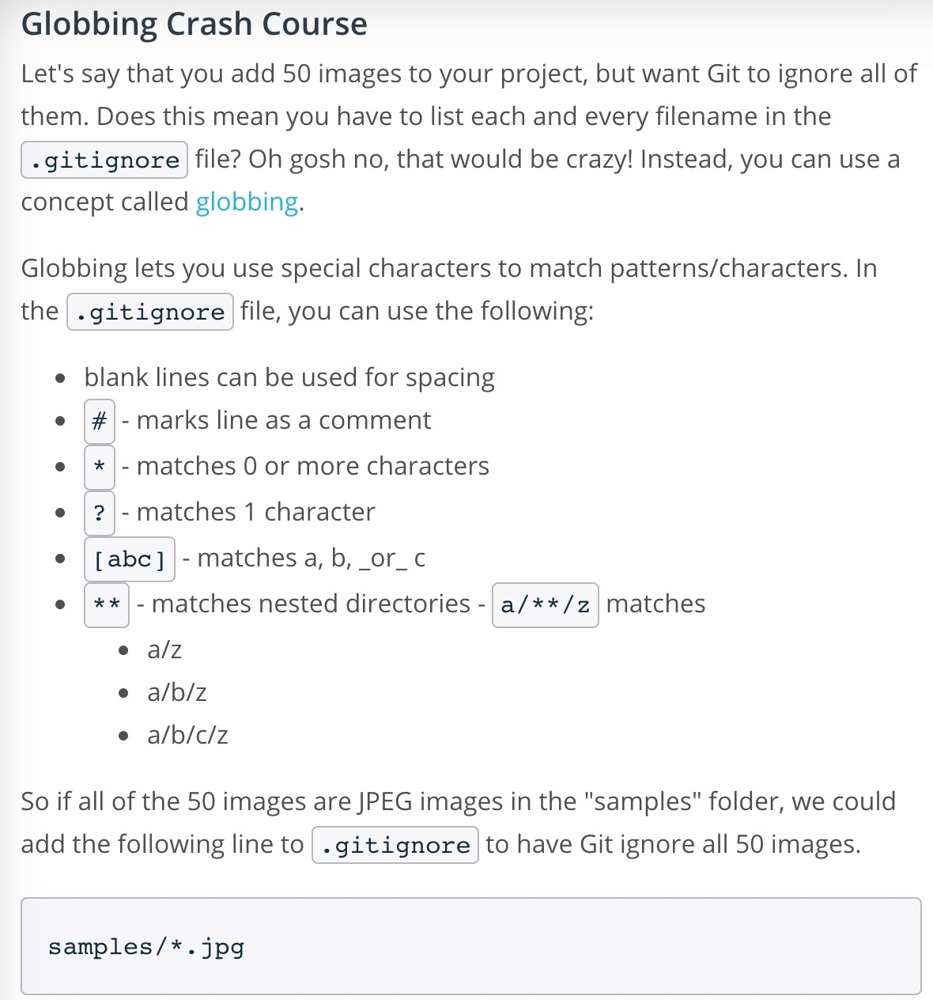
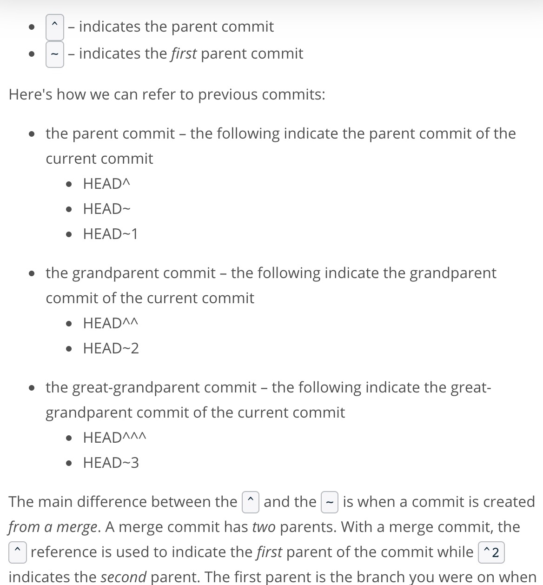
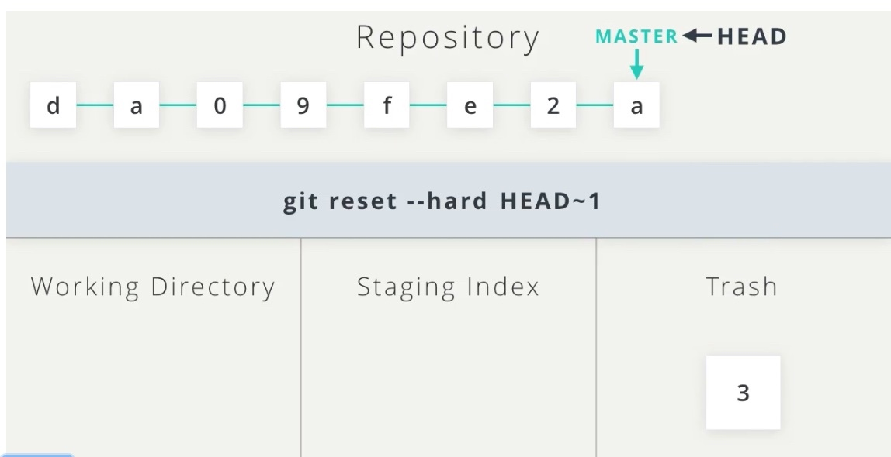
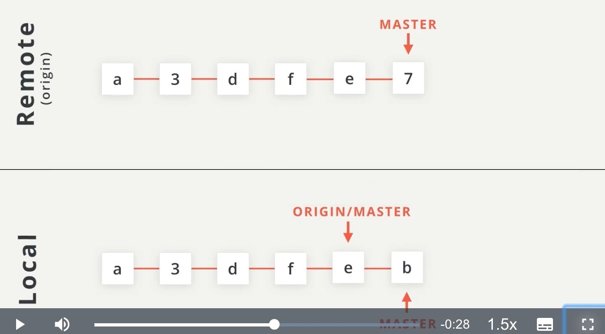
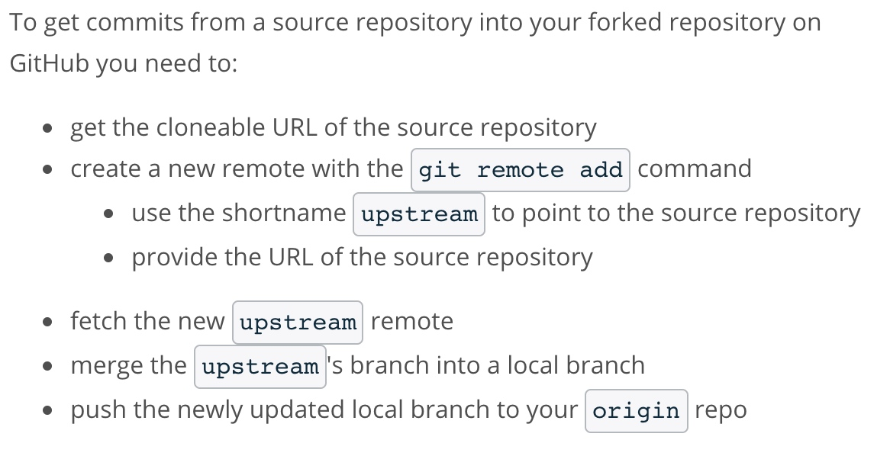
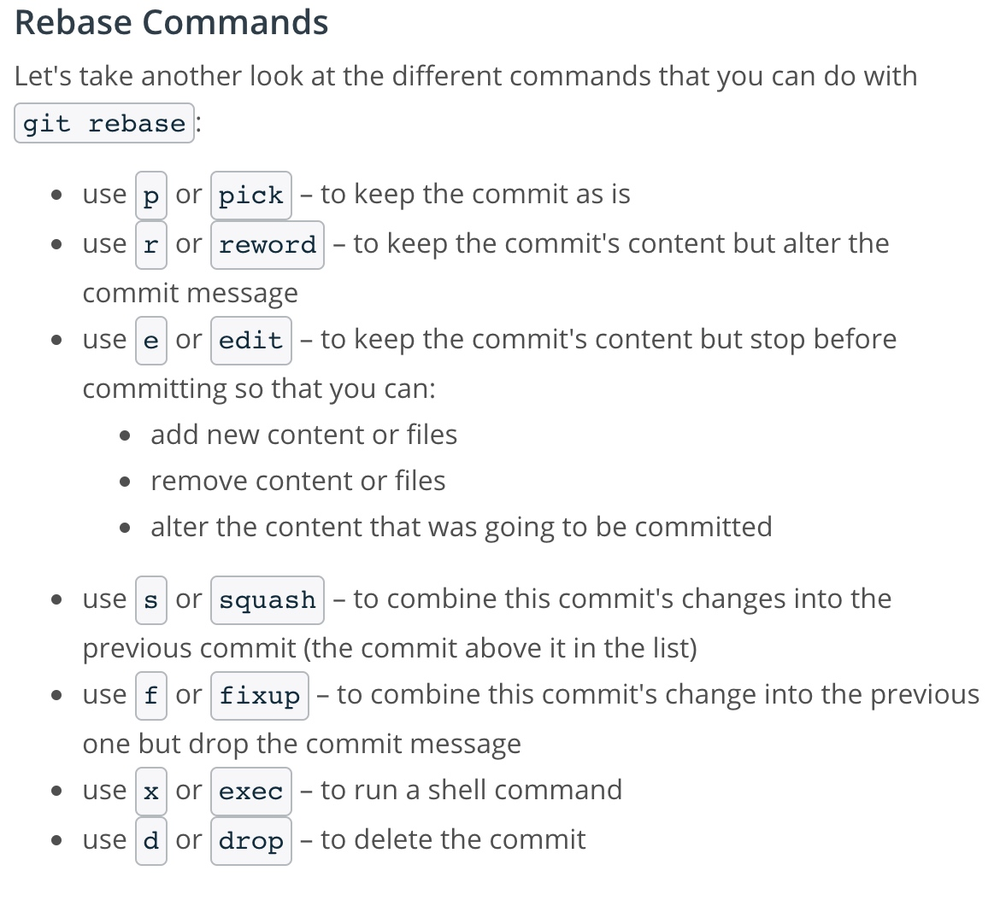

Udacity Git & Github Course Notes

2020/01/07 20:14 下午
posted in
Udacity Git & Github Course

2020/01/07 20:14 下午
posted in
Udacity Git & Github Course
git log - display all of the commits of a repository
git log --oneline (use flag to alter display)
git log --stat
command line pager

git log -p (flag short for --patch)
git log -p -w (-w flag ignores whitespace changes)git log -p SHA OR git show -SHA to look into a specific commitgit add <file1> <file2>...<fileN>
git add . refers to the all files and directories in current directorygit rm --cached
git commit -m "Initial commit"
-m flagWhat to include in a Commit
What makes good commit messages?
Do
Do not
What if you want to explain the Why

The information in red box is included in the git log.
Udacity Git Commit Message Style Guide
git diff
git log -pHaving Git Ignore Files
.gitignore file to the same directory that the hidden .git directory is locatedWhat if there are a lot files to ignore?

Tagging
git tag -a v1.0 (SHA)
-aflag (always use this flag) tells Git to create an annotated flag which include a lot of extra information such as:
git tag -d v1.0Branching
git branch (name) (SHA)
git branch -d (name))
git branch -D sidebargit checkout (name)
git checkout -b footer master
See all branches at once
git log --oneline --graph --allMerging
git merge <other-branch>merge into the current 'checkout' branchMerge Conflicts
Changing The Last Commit
git commit --amend
git commit --amendReverting A Commit
git revert
git revert <SHA-of-commit-to-revert>Relative Commit References

Resetting Commits
git reset <reference-to-commit>
backup branch on the most-recent commit git branch backup
Back To Normal
backup into master (which will cause a Fast-forward merge and move master up to the same point as backup)
Add A Remote Repository
git remote add origin <url> to set the shortnamegit remote -v to see the full path to the remote repositoryPush Changes To A Remote
git push <remote-shortname> <branch>Pulling Changes From A Remote
git pull <remote-shortname> <branch>Pull vs Fetch
git pull do two things:
git pull origin master
Reviewing Existing Work
Filter Commits By Author
git shortlog -s -n
-s to show just the number of commits-n to sort them numericallygit log --author=surma
Filter Commits By Search
--grepflag
git log --grep=buggit log --grep="unit tests"Determining What To Work On
CONTRIBUTING.mdfileTopic Branches
Update The README
Create a Pull Request
Recap
A pull request is a request for the source repository to pull in your commits and merge them with their project. To create a pull request, a couple of things need to happen:
Retrieving Upstream Changes
git fetch upstream master
Manage an active PR
If the project's maintainer is requesting changes to the pull request, then:
The commits will then show up on the pull request page.
Squash Commits
The Rebase Commandgit rebase -i HEAD~3
HEAD~3as the base where all of the other commits (HEAD~2, HEAD~1, HEAD) will connect to. (HEAD point to current location) -i in the command stands for "interactive". 